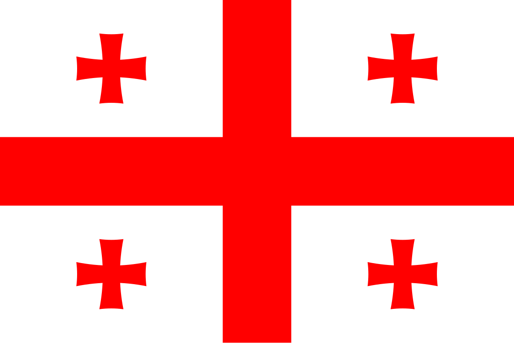

<!--pixel არის პატარა წერტილი რომელსაც შეუძლია მიიღოს ნებისმიერი ფერი პიქსელების მეშვეობით იგება კომპიუტერული ნახატები ეკრანი თამაშები
და რაც უფრო მეტი პიხსელია მით უფრო ხარისხიანია ფოტო კომპიუტერში-->
